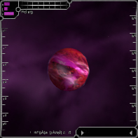

| Amananth | Hyperial | Octavius | Quantar | Solrain |
Amananth Societal OverviewAmananth is somewhat of a mystery. No one really knows who or what the Amananth are, and TRI does not officially acknowledge Amananth's sovereignty. Pilots who have ventured into Amananth territory have not reported any hostility, or much of any activity for that matter. It is known that Amananth possesses superior technology. Several brave TRI pilots have docked at Amananth station, and report it to be a somewhat eerie and unsettling experience. The hallways are completely deserted and devoid of life, yet the station is kept clean and polished. Trade and sales are entirely automated, and portions of the station are kept locked at all times. Unknown before the Collapse, this race boasts many pieces of technology formerly unknown and unheard of to the dominant races. A mananth appears to have the most technically efficient powerplant design to date, kept under heavy lock and key. Many an industrial spy's life has been spent attempting to get their hands on Amananth powerplant specs. Their ships are rumored to be virtually self-sustaining, although there are no official records of anyone actually observing one. Most of the equipment originating from this sector requires little to no extra power. If Amananth ever surfaced and desired conquest, their destructive force would be difficult to fathom. |
Amananth System OverviewThe Amananth System is located between Octavius and Quantar, and consists of approximately 10 sectors. At present the Amananthii have built 1 space station - Amananth. This station is located near the dominant planet of the Amananth System - AM I. |

Amananth: AM IPopulation: unknown There is no reliable data available for AM I. TRI surface scans have not yielded any results due to a distortion field of unknown origin. |